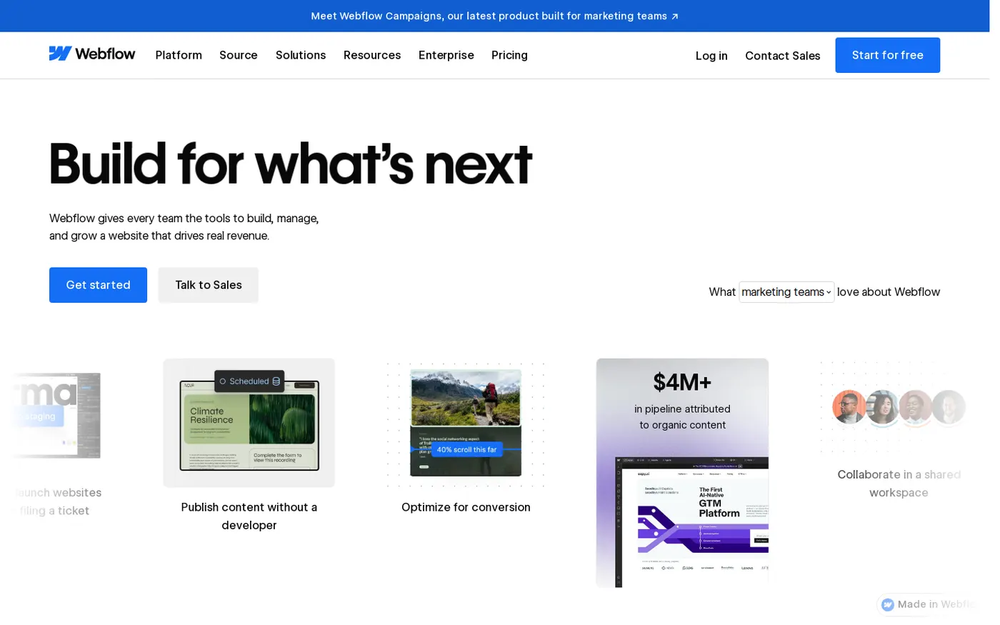
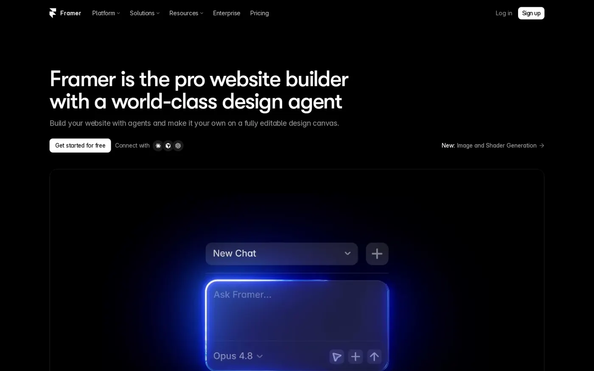
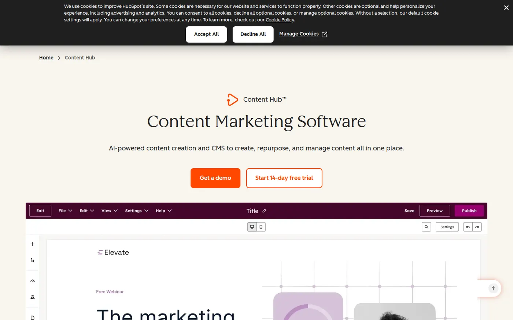
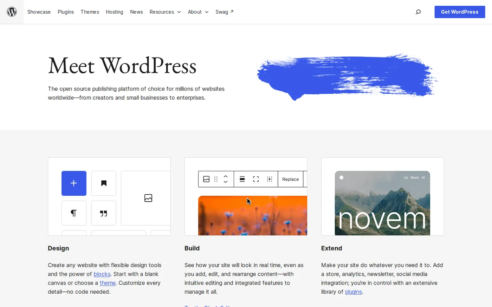
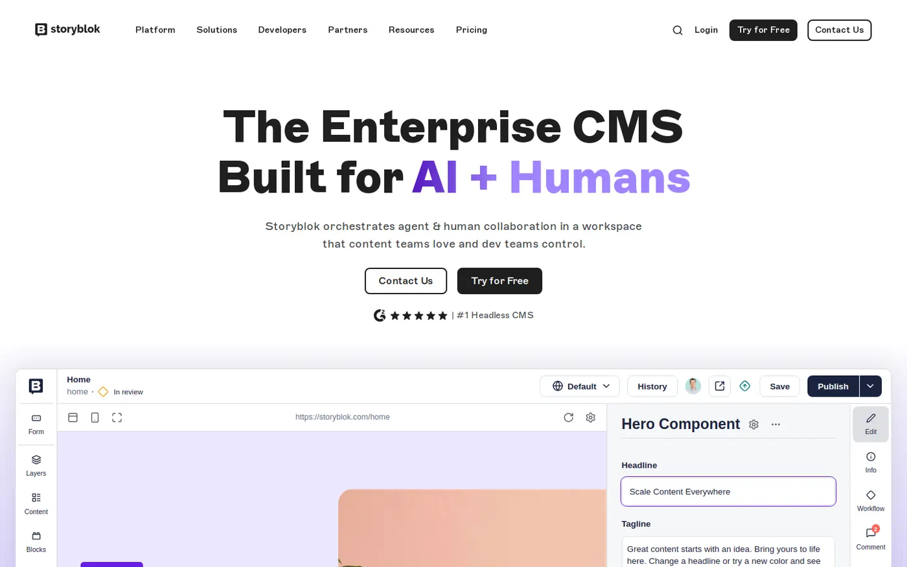
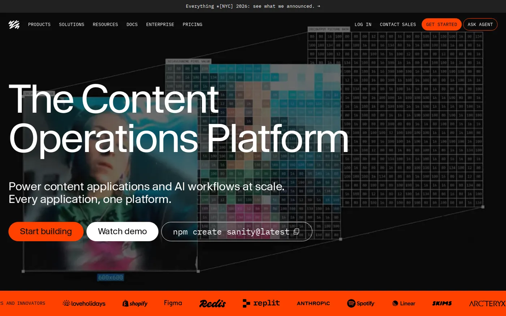
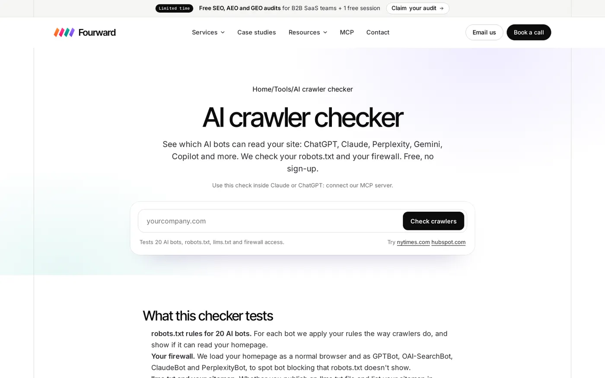

On this page
The best content management tools for a B2B SaaS marketing site in 2026 are Webflow and Framer for marketer-built pages, and HubSpot Content Hub for teams on HubSpot. WordPress suits large blogs that want plugins, and Storyblok or Sanity suit teams whose developers build the site.
This post compares 6 tools on three tests: how fast marketers can publish, how much SEO control they get and whether AI crawlers can read the site. Every fact comes from each company's own website, checked on 15 November 2026.
I work at Fourward, which publishes this guide. None of the six tools is ours. Our free AI crawler checker appears after the picks, without a number, because it checks a site rather than running one. Every fact comes from that company's own website, checked on 15 November 2026. No vendor paid to be included.
- A content management tool, or CMS (content management system), is software that lets your team write, edit and publish web pages without changing code.
- For a SaaS marketing site, judge a CMS on three tests: publishing speed, SEO controls and AI crawler access.
- Entry paid plans run from US$4 a month (WordPress.com Personal, billed yearly) to $99 a month (Storyblok Growth, billed monthly). HubSpot Content Hub and Sanity have free plans.
- Robots.txt sits in a different place on each tool. It is a settings field on Webflow and HubSpot, an uploaded file on Framer Pro, plugins or code on WordPress, and your developers' code on headless tools.
What a content management tool does
A CMS is where your marketing site's pages, blog posts and case studies live. Your team writes and edits in the CMS, presses publish, and the page goes live.
CMS tools for SaaS sites come in three kinds:
- Visual buildersDesign, content and hosting in one tool. Marketers lay out a page on screen and publish it. Webflow and Framer work this way.
- All-in-one platformsA CMS joined to other software. HubSpot Content Hub sits on HubSpot's CRM (customer relationship management) system. WordPress adds features through plugins.
- Headless CMSsThey store content only. Your developers build the website that shows it. Storyblok and Sanity work this way.
Headless means the CMS has no front end, the part visitors see. That gives developers freedom, but every new page type waits for them.
Three tests for a SaaS marketing site CMS
CMS feature lists are long and hard to compare. For a B2B SaaS marketing site, three questions decide whether the CMS helps your team or slows it down.
Publishing speed
Publishing speed means how fast a marketer can get a new page live without a developer. I judged it from how each tool works. I didn't time anything.
- Visual builders are quickest for new pages, because the person writing the page also lays it out.
- Headless tools are quick for new posts once templates exist, and slow for new page types.
SEO controls
SEO controls are the settings that tell search engines what to show, such as page titles, redirects, sitemaps and robots.txt. Robots.txt is a plain text file at the root of your site. It tells bots which pages they may crawl.
- This post checks one SEO control on every tool: where you edit robots.txt, and who can edit it.
- The other basics, from titles to internal links, are in our guide to SEO for B2B SaaS.
AI crawler access
An AI crawler is a bot that an AI company sends to read web pages for its answers or its models. If those bots can't reach your pages, AI engines know less about you.
- Robots.txt rules can block AI crawlers by name.
- A firewall, the security layer in front of your site, can block them even when robots.txt allows them.
Ask who edits robots.txt before you sign. On some tools it is a marketer's setting. On others it is a developer's task.
How I picked and checked them
I picked two tools of each kind: visual builders, all-in-one platforms and headless CMSs. For each one, I checked its own pricing page on 15 November 2026. For the four that serve your pages, I also read its docs on robots.txt. I didn't create accounts or time any publishing, so nothing here claims hands-on results.
Two gaps: Webflow's pricing page and Contentful's pricing page didn't load for me that day. I left Webflow's price out and Contentful off the list, rather than guess. The order runs from least to most developer work.
The best content management tools at a glance
The same four facts for every tool. Scroll the table sideways on a phone.
| Tool | Kind | Best for | Starts at | Where robots.txt is set |
|---|---|---|---|---|
| Webflow | Visual builder | Design-led marketing teams | Not checked | Site settings, SEO, Indexing |
| Framer | Visual builder | Quick launches on a small budget | $10 a month (Basic) | Uploaded file, Pro and Enterprise |
| HubSpot Content Hub | All-in-one | Teams already on HubSpot | Free for 2 users | Content, Pages settings, per domain |
| WordPress | All-in-one | Large blogs that want plugins | Free software, or US$4 a month hosted | Plugins or a code filter |
| Storyblok | Headless | Developers plus visual editing | $99 a month (Growth) | Your front end code |
| Sanity | Headless | Custom content beyond the site | Free for 20 seats | Your front end code |
1. Webflow
Best for Design-led marketing teams that want to build and publish pages without a developer.

Webflow is a visual website builder with a CMS and hosting in one product. Designers lay out pages on a canvas, and marketers add posts and case studies to CMS collections.
Robots.txt is a text field in Webflow's site settings, so a marketer can change it. Since 28 October 2026, Enterprise sites can also read and replace that field through an API, which is in beta.
- Publishing speedQuick. The person who writes a page can lay it out and publish it.
- Robots.txtA field under Site settings, SEO, Indexing. The robots.txt API is for Enterprise sites only. Webflow changelog
- AI crawler accessSet in that same robots.txt field. Our guide on how to create an llms.txt file covers the Webflow steps for llms.txt too.
- PricingNot shown here. Webflow's pricing page didn't load when I checked, so check the CMS site plan price there.
My take A strong default when your designers already work in Webflow. Robots.txt sits where marketers can reach it, which also means anyone with access can change it by mistake.
2. Framer
Best for Startups and small teams that want to launch pages quickly on a small budget.

Framer is a visual site builder with a CMS and hosting. Its CMS stores content in collections, where each collection is one content type, such as blog posts.
Uploading your own files, such as robots.txt, uses Framer's static files feature. Framer's help centre says this feature is available on Pro and Enterprise plans.
- Publishing speedQuick. Pages are built and published in the same editor.
- Robots.txtYour own robots.txt goes in as a static file, on Pro and Enterprise. Static files help
- AI crawler accessOn Basic, you can't upload your own file, so check what your live robots.txt allows.
- PricingBasic is $10 a month with 2 CMS collections. Pro is $30 a month with 10 CMS collections. Pricing page
My take The cheapest way into a visual builder in this list. A SaaS site often needs a blog, case studies and a changelog, so plan for Pro's 10 collections.
3. HubSpot Content Hub
Best for Teams whose sales and marketing already run on HubSpot.

HubSpot Content Hub is HubSpot's CMS, built into the same account as HubSpot's CRM. That puts your pages next to the contacts and forms your team already uses.
You edit robots.txt for each domain from the Content, Pages settings. HubSpot says a custom file will "override any robots.txt default settings for this domain."
- Publishing speedQuick for marketers, who publish inside the HubSpot account they already use.
- Robots.txtSettings, then Content, then Pages, for each connected domain. HubSpot help
- AI crawler accessSet in that robots.txt field, one domain at a time.
- PricingFree for up to 2 users. Starter from $7 a month per seat. Professional from $450 a month with 3 core seats, billed annually. Pricing page
My take The natural pick if HubSpot is already your CRM. Price your seats before you grow, because the step from Starter to Professional is large.
Free check. 75 checks, one score out of 100, under a minute.
4. WordPress
Best for Content-heavy sites that want to choose their own host and add features with plugins.

WordPress is free, open-source software that you can host anywhere. WordPress.com is a hosted version from Automattic, with paid plans.
WordPress outputs a default robots.txt file. Developers change it with a code filter named robots_txt. The docs for WordPress VIP (an enterprise WordPress hosting service) show how to use that filter to disallow AI crawlers.
- Publishing speedQuick for blog posts. New page layouts depend on your theme, and often need a developer.
- Robots.txtA default file, changed with plugins or the robots_txt filter. WordPress VIP docs
- AI crawler accessCheck the live robots.txt after you add an SEO or security plugin.
- PricingThe software is free. WordPress.com plans are US$4 (Personal), US$8 (Premium) and US$25 (Business) a month, billed yearly. Pricing page
My take The most flexible option here, and the one that needs the most care. Every plugin is one more thing that can change your SEO or crawler settings.
5. Storyblok
Best for Teams with developers who still want marketers to edit pages visually.

Storyblok is a headless CMS with a Visual Editor. Developers build the website once, then marketers edit content while they see the page it appears on.
Storyblok doesn't serve your public site. So robots.txt lives in your developers' front end code, not in the CMS.
- Publishing speedQuick once developers build the page blocks. Each new kind of block needs a developer.
- Robots.txtSet in your front end, the code your developers deploy.
- AI crawler accessDepends on how your developers build and host the front end.
- PricingStarter is a "Limited plan for testing and personal projects." Growth is $99 a month, billed monthly. Pricing page
My take The best fit when you want headless and visual editing together. Agree with your developers, before launch, who owns robots.txt.
6. Sanity
Best for Developer-led teams that need custom content for the site, product pages and docs.

Sanity is a headless CMS that developers set up in code. Teams define their own content types, so one place can hold pages, docs and product data.
Sanity's Free plan includes live previews and visual editing tools. Editors can see a change on the page before they publish it.
- Publishing speedQuick for editors after setup. The setup itself is developer work.
- Robots.txtSet in your front end, not in Sanity.
- AI crawler accessDepends on your front end and hosting, as with any headless CMS.
- PricingFree for up to 20 user seats. Growth is $15 per seat a month. Pricing page
My take The most flexible content setup in this list, and the most developer time. Choose it when your content goes beyond the marketing site.
How to check AI crawler access on any CMS
Whichever CMS you pick, check AI crawler access after launch and after every redesign. Three things can block AI crawlers:
- Robots.txt rulesA Disallow line that names an AI bot, or a rule copied over from a staging site, the test copy of your site.
- Firewall and bot settingsSecurity tools in front of your site can turn AI bots away even when robots.txt lets them in.
- Plan limitsSome controls sit on higher plans, such as your own robots.txt on Framer Pro or the robots.txt API on Webflow Enterprise.

Fourward's free AI crawler checker tests 20 AI crawlers against your robots.txt and your firewall. Our free MCP server runs the same check from Claude, ChatGPT, Cursor or VS Code.
For a wider view, the free AI visibility check our team built runs 75 checks on what AI engines can read about a site. Being crawled is only the first step, as our GEO guide for B2B SaaS explains. GEO (generative engine optimization) is the work of getting named in AI answers.
A new plugin, plan or firewall rule can change crawler access. Check the live robots.txt and firewall after every big change to the site.
What content management tools cost
List prices in US dollars, as published on 15 November 2026. Watch how each tool charges, because a low seat price grows with your team.
- Per site planWordPress.com from US$4 a month, billed yearly. Framer from $10 a month.
- Per seatHubSpot Content Hub Starter from $7 a month per seat. Sanity Growth at $15 per seat a month.
- Flat plan priceStoryblok Growth at $99 a month, billed monthly. HubSpot Content Hub Professional from $450 a month with 3 core seats, billed annually.
- Free to startHubSpot Content Hub, free for up to 2 users. Sanity, free for up to 20 user seats.
- Not checkedWebflow, because its pricing page didn't load for me.
Seat pricing adds up as you hire. Five editors on Sanity Growth cost $75 a month, and five on HubSpot Starter cost $35 a month at the listed price. Self-hosted WordPress and headless tools also need hosting, which is a separate bill.
How to choose a content management tool
Start with who will publish each week, then check who controls robots.txt.
| Your situation | Start with | Why |
|---|---|---|
| Designers want to build and ship pages without developers | Webflow or Framer | Design, CMS and hosting in one tool |
| Your sales and marketing already run on HubSpot | HubSpot Content Hub | Pages, CRM and robots.txt in one account |
| You publish a large blog and want plugins | WordPress | Free software, US$4 a month hosted |
| You have developers and want visual editing | Storyblok | A Visual Editor on a headless CMS |
| You need custom content for site, product and docs | Sanity | Free for 20 seats, $15 a seat on Growth |
| You already have a CMS | Fourward AI crawler checker | Tests 20 AI crawlers, robots.txt and firewall |
Mistakes to avoid when picking a CMS
Each of these is easy to make when you choose or change a CMS.
- Choosing on the demo design. Who publishes each week matters more than how the template looks.
- Going headless without developer time. Every new page type waits for a developer, so budget their hours first.
- Never opening robots.txt. Visit yoursite.com/robots.txt after launch and after each redesign.
- Comparing headline prices. Seat prices and plan limits, such as Framer's robots.txt upload on Pro, change the real cost.
- Moving without redirects. Old page addresses need redirects to the new ones, or search engines lose the pages they ranked.
Pick the CMS your marketers can publish on every week, then make sure AI crawlers and search engines can still read it.
A full SEO, AEO and GEO audit, plus 30 minutes with our team to walk you through it.
FAQs
What is the best content management tool for a B2B SaaS website?
Webflow or Framer suit teams that want marketers to build pages without developers. HubSpot Content Hub suits teams already on HubSpot, and WordPress suits large blogs. Storyblok and Sanity suit teams with developers who want a headless CMS.
Is a headless CMS better for SEO?
Not by itself. A headless CMS hands SEO controls such as robots.txt to your developers' front end. The results depend on how well that front end is built.
How do I let AI crawlers read my CMS site?
Check that your robots.txt doesn't block AI bots, then check your firewall's bot settings. Fourward's free AI crawler checker tests both for 20 AI crawlers.
How much does a CMS cost for a SaaS marketing site?
Entry paid plans run from US$4 a month on WordPress.com, billed yearly, to $99 a month for Storyblok Growth. HubSpot Content Hub is free for up to 2 users, and Sanity is free for up to 20 seats.
Where do I edit robots.txt in Webflow or HubSpot?
In Webflow, it is under Site settings, SEO, Indexing. In HubSpot, it is in the Content, Pages settings for each domain.
Sources
- New: robots.txt Content API (beta), Webflow Developers, 28 October 2026, checked 15 November 2026.
- Framer: Pricing, Framer, checked 15 November 2026.
- Framer Help: Static files, Framer, updated 15 September 2026, checked 15 November 2026.
- Prevent content from appearing in search results, HubSpot Knowledge Base, updated 28 July 2026, checked 15 November 2026.
- Content Hub pricing, HubSpot, checked 15 November 2026.
- WordPress.com Pricing, Automattic, checked 15 November 2026.
- robots.txt, WordPress VIP Documentation, updated 20 August 2025, checked 15 November 2026.
- Pricing, Storyblok, checked 15 November 2026.
- Pricing, Sanity, checked 15 November 2026.